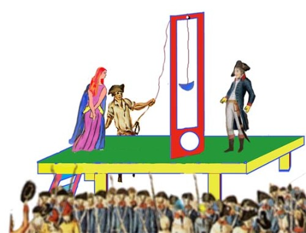

自由、自由，多少罪惡假汝之名而行 江銘輝五夢網
1.來源
2.詳情
法國大革命是有史以來最為澎湃洶湧的社會民主革命運動，它如同一場暴風雨，將封建遺弊一掃而光，大革命時有兩大黨派，一是代表工商市民的溫和共和派吉倫第黨（Girondins）;一是代表升鬥小市民及下層農、工社會的激進派雅各賓黨（Jacobin）。在以男性為中心的革命中出現了一位傑出女性，她就是被19世紀法國著名歷史學家米涅（Mignet, Francois）譽為“吉倫第黨靈魂”的羅蘭夫人。
革命進行至中期時，吉倫第黨佔盡優勢。1972年春天，吉倫第黨組閣，羅蘭出任內務大臣，他有一個夫人既美麗又有才氣，且非常關心政治人稱羅蘭夫人，羅蘭家的客廳，就成為吉倫第黨的總部。當她的丈夫出任首長時，她更加活躍。有人戲稱:「出任首長，不是羅蘭，是羅蘭夫人。」
羅蘭夫人1754年出生於巴黎一個手工業的家庭，父親是潦倒的雕塑工人。她從小就具有強烈的求知欲，嗜好讀書，接受良好的教育，廣泛閱讀法國啟蒙思想家的著作，成為盧梭（Jean-Jacques Rousseau）的忠實信徒。她深深體驗到卑微社會地位之悲哀，飽嘗特權階層的白眼。有一次她與母親到封特內堡作客時，主人不允許他們與權貴坐在一起，只能在廚房中吃些殘羹冷炙，使她自尊心遭受嚴重打擊，發誓要消除不平等現象，改革此不公正的社會。1780年她與羅蘭結婚。她的先生也出生於貧寒的家庭，當過小職員和工廠巡視員。1785年夫婦遷居至里昂，1790年在此組建俱樂部，並定期與巴黎人士通信，交換對時局的看法，共同的政治信仰把他們緊緊聯繫起來，形成了吉倫第黨的領導核心。
1791年遷居至大革命的中心--巴黎市，直接投身革命。羅蘭夫人在家中開辦的政治沙龍成為政界要人的活動中心。她頭腦清晰，處事冷靜果斷，具有鋼鐵般的毅力和敏銳的洞察力，成為吉倫第黨的靈魂。
1792年3月吉倫第黨奉命組閣，羅蘭夫人運用她的威望使羅蘭當了內政大臣。9月國民議會開幕，法蘭西第一共和國成立，代表中等工商業資產階級的吉倫第黨掌權，他們認為已推翻國王，實現民主共和，革命大業完成，不再需要革命，應重視正義、自由和秩序，厭惡無政府狀態和流血。但他們的優勢是短暫的，政權並不穩定，以羅伯斯庇爾為首的雅各賓黨在狂熱的無套褲漢（Sans Culottes，指法國十八世紀資產階級革命時期的平民，當時短褲和長統襪是貴族的服飾）推動下，越來越走向極端。不斷向溫和的吉倫第黨發起攻擊，指責羅蘭的官邸是“群眾思想的控制所”，羅蘭則指責他們是嗜血者和混亂的製造者。11月在王宮的夾牆上發現裝有鐵門的秘密保險櫃，是路易十六指定給羅蘭用的，在保險櫃中找到了王室與外國勾結的證據，雅各賓黨指責羅蘭銷毀了一部分的秘密檔案，要求將國王處死。吉倫第黨雖然有心挽救國王，但也擔心被視為保王派， 12月國民議會開始審判路易十六，吉倫第黨被迫接受了雅各賓黨的提案，處死路易十六，兩黨在議會中漸趨尖銳的對立。後來雅各賓黨將吉倫第黨逐出議會，霸佔公安、保安兩個委員會，對政敵毫不寬容，均予殺害，造成了恐怖政治。
1793年1月路易十六在革命廣場被推上斷頭臺。羅蘭對此深表失望，23日辭去內政部長職務。革命已如脫韁野馬難以控制，吉倫第黨與雅各賓黨的鬥爭逐漸白熱化。1793年5月31日到6月2日，雅各賓黨推翻吉倫第黨，大力搜捕其領導人，6月1日晨羅蘭夫人在家中被捕，先後關押在一家修道院和巴黎裁判所附屬監獄，羅蘭則逃到西部的盧昂避難。
羅蘭夫人在獄中寫下《回憶錄》，雅各賓黨實行恐怖政策，欣起了一個處決的高潮，10月16日瑪麗王后被送上斷頭臺。國民公會對吉倫第黨人士進行審判，禁止律師為之辯護。11月8日羅蘭夫人也走向斷頭臺，行刑那天，羅蘭夫人充分表現了英勇和堅韌不拔的精神，她站在斷頭臺上，說：“我認識的人越多，就越喜歡狗，這是一句非常古怪，驚世駭俗的諷刺性語，它暗示人是虛偽不誠實的，而狗始終如一的忠貞，所以她認識的人越多，就越喜歡狗的忠誠。後來她想心中的感觸寫下，要求創子手借筆和紙給她。但卻遭到拒絕。於是她向革命廣場上的自由神像深深一鞠躬，緩緩走向斷頭台，無限感慨地喃喃低語:“啊! 自由!自由，多少罪惡假汝之名而行!”
而羅蘭在逃往諾曼地的途中，第2天聽到她被處死，萬念俱焚，便在盧仰附近自殺了，他的成名都皆因他妻子的榮耀而來。
歷史對羅蘭夫人的評價不一，不過僅由那遺言，以她的才華和如希臘女神一般的風采來看，可說是歷史上罕見的奇花。

圖2：走向斷頭台的羅蘭夫人